Media Workbench · current UI
13 fresh captures from an isolated instance of the current application, 18 September 2026. Desktop browser viewport: 1440 × 900. Mobile: 390 × 844. Click a screenshot to inspect it at full resolution.
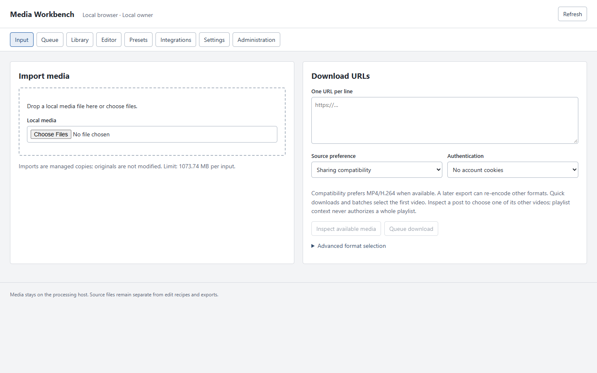
01 importImport and download compete with eight peer navigation destinations.
Document height at capture: 900 px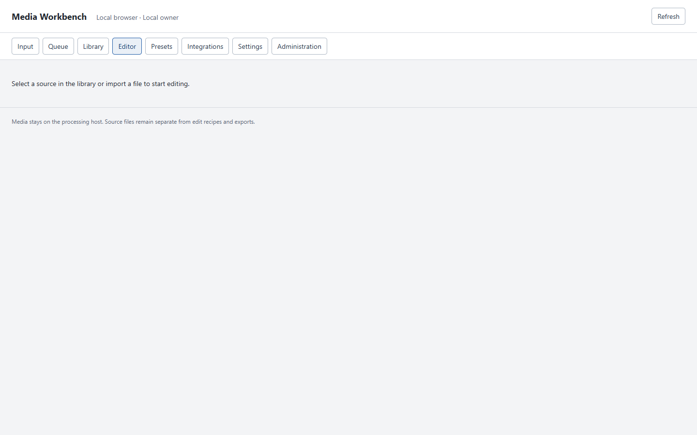
02 editor emptyEditor empty state gives instructions but no direct import action.
Document height at capture: 900 px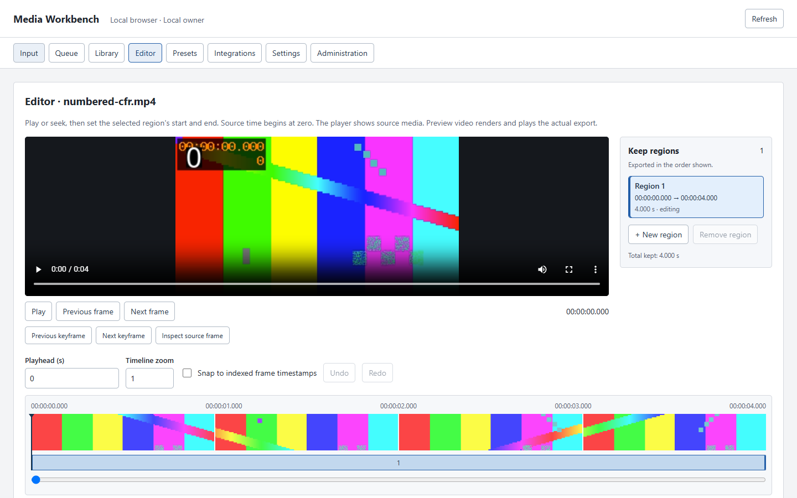
03 editor viewportAt 1440 × 900 the initial view does not reach region in/out fields.
Document height at capture: 2804 px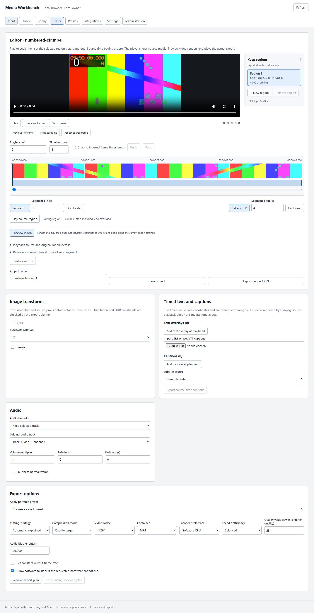
04 editor fullThe initial editor is 2,804 px tall: viewer, tools and export are separated by scrolling.
Document height at capture: 2804 px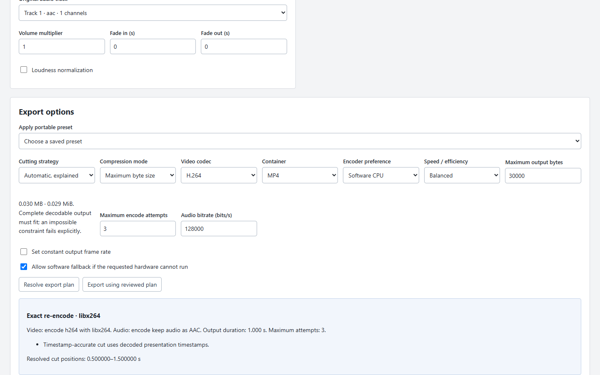
05 export planMany technical choices precede the plan and final export action.
Document height at capture: 3061 px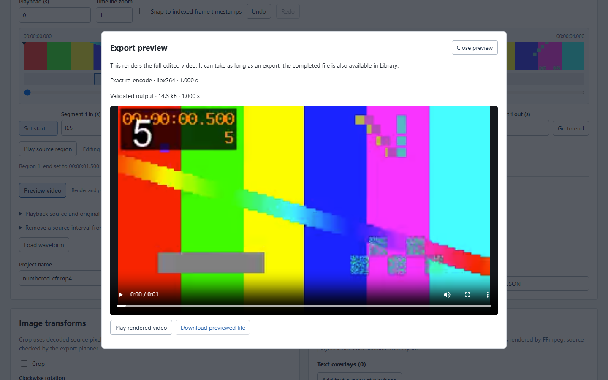
06 rendered previewThis is a real rendered output, not a simulation of the source player.
Document height at capture: 4419 px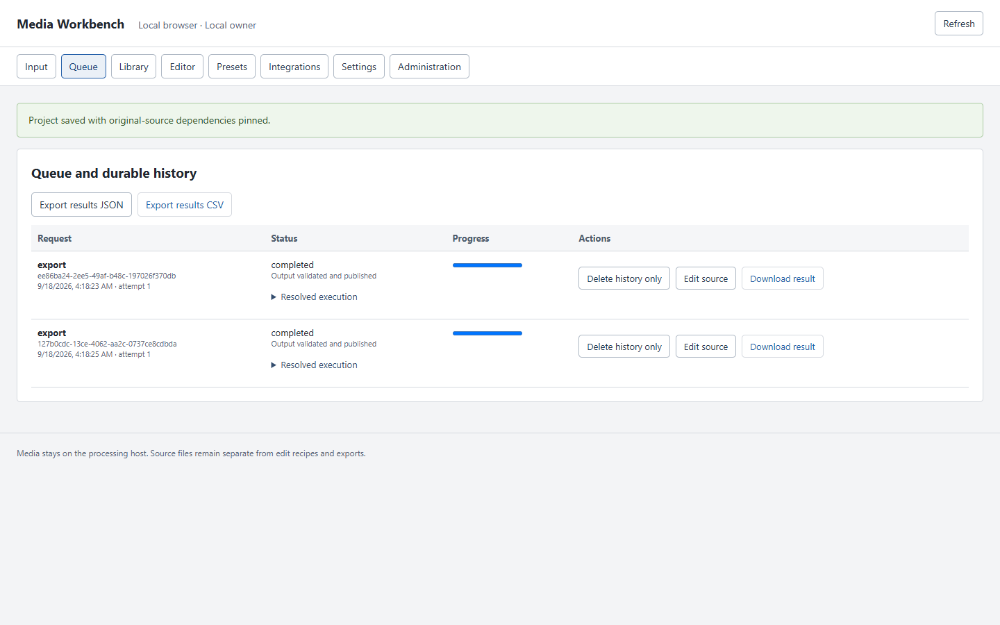
07 queueOpaque job IDs and generic export names reduce recognition.
Document height at capture: 900 px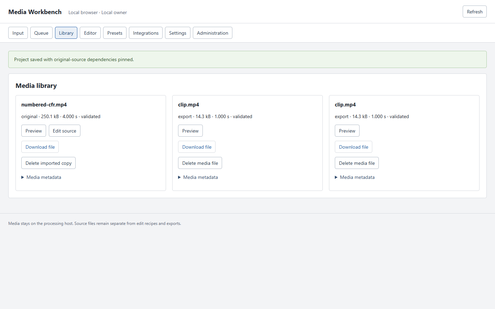
08 libraryPreview and export produce two visually indistinguishable clip.mp4 entries.
Document height at capture: 900 px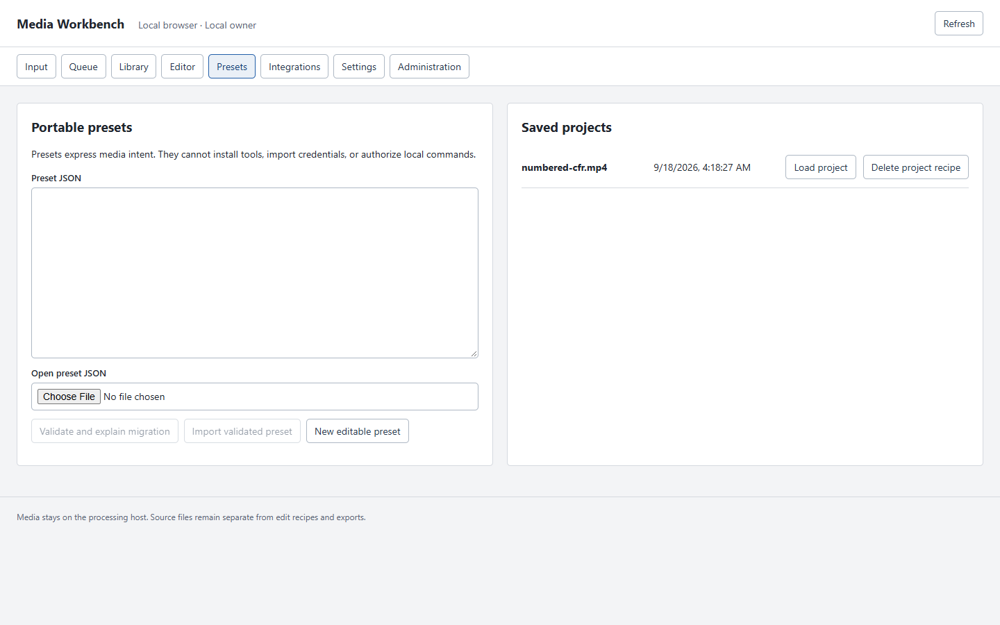
09 presetsJSON preset editing and saved projects share one destination.
Document height at capture: 900 px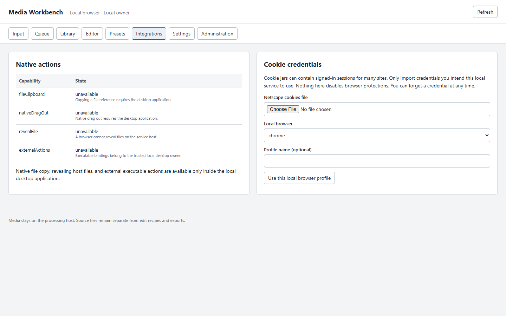
10 integrationsBrowser capability limitations and credentials share a page; native actions were not exercised.
Document height at capture: 900 px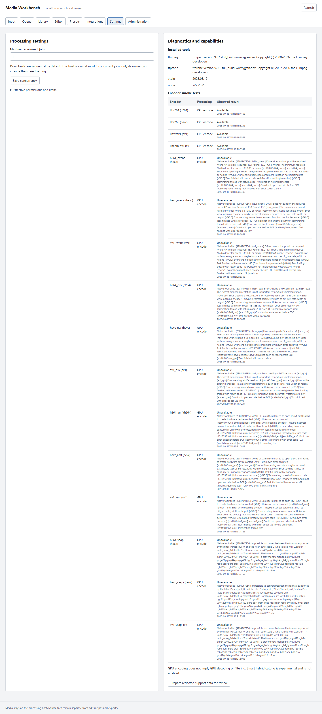
11 settingsDiagnostics and encoder details form another long page.
Document height at capture: 3189 px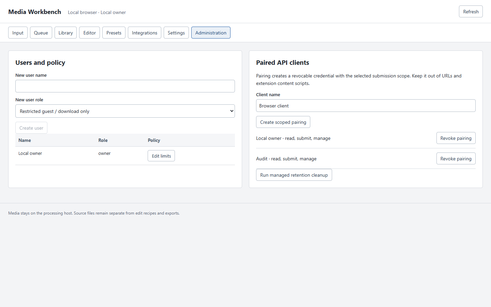
12 administrationOwner operations are exposed at the main navigation level.
Document height at capture: 900 px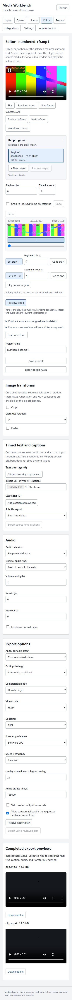
13 editor mobileNo horizontal page overflow was observed, but the editor becomes a long vertical workflow.
Document height at capture: 5358 px